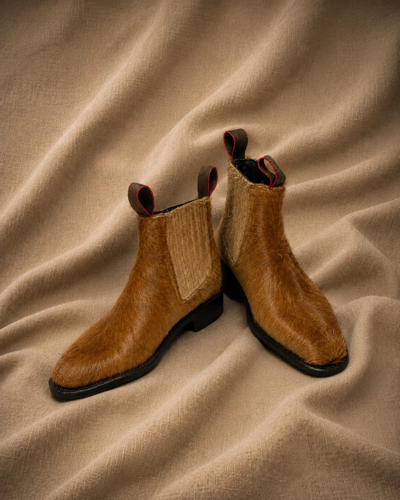

Talabartería · Blucher
Botín Charro Becerro Vino
Becerro café/vino · Horma oval — flexible, de grano fino
Talabartería · Blucher
Becerro café/vino · Horma oval — flexible, de grano fino

Colección Estilo
Cordobán negro · Pieza de vestir
El becerro es de las pieles más nobles del oficio: flexible, de grano fino, capaz de sostener un tono que oscila entre el café oscuro y el vino según la luz que lo toque. Horma oval, resorte a los lados, suela pegada directamente al corte.
Un botín que cambia de personalidad con la luz del día. Talla 6½ (equivalente 39). Sobrio de mañana, intenso de noche.
Ficha técnica
El oficio detrás del par
Piel joven, flexible, de grano fino. El color cambia según la luz: marrón profundo de día, destellos vino al atardecer. Una piel viva.
Ligeramente más estilizada que la Bolaños. Ideal para pies delgados — envuelve sin apretar.
Construcción directa sin costura visible — limpia y minimalista. Reduce peso sin sacrificar estructura.
Escoge tu talla. Cada par se fabrica sobre pedido y podemos ajustarlo a tu medida.
Preguntar por WhatsApp